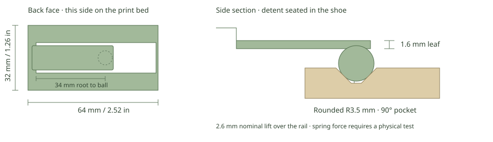

R1 · One printed part. Test the snap-in feel using a shoe you already have.
Drag to orbit · scroll to zoom. The open rail channel faces up in this print orientation.
Geometry 3MF · STL · STEP
| Overall size | 64 × 32 × 10.10 mm 2.52 × 1.26 × 0.40 in |
|---|---|
| Print estimate | 10.5 g · 20 min |
| Spring leaf | 34 mm root to ball 12 mm wide × 1.60 mm thick |
| Rounded detent | R3.50 mm |
| Nominal spring travel | 2.60 mm over the rail |
| 8 mm mouth · 2 mm floor 3 mm deep · 90° included angle | |
| Rail clearance | 0.35 mm per side |
| Settings | PLA · 0.20 mm · 5 walls 15% infill · supports off |
Print flat back and leaf down, with the channel upward. The leaf begins on the bed and bends away from the shoe when the ball travels over the rail.
Both existing full-size profiles clear the fixed coupon in CAD. Bambu slicing passed without warnings. Pull force, fatigue and retention are untested. This version deliberately uses the tapered pocket as well as the rail; it is not a rail-only connection.
If it binds before reaching the pocket, stop and report the rail fit separately from the snap force. Stop if the leaf cracks or takes a permanent bend.
